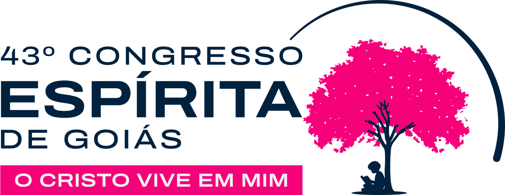
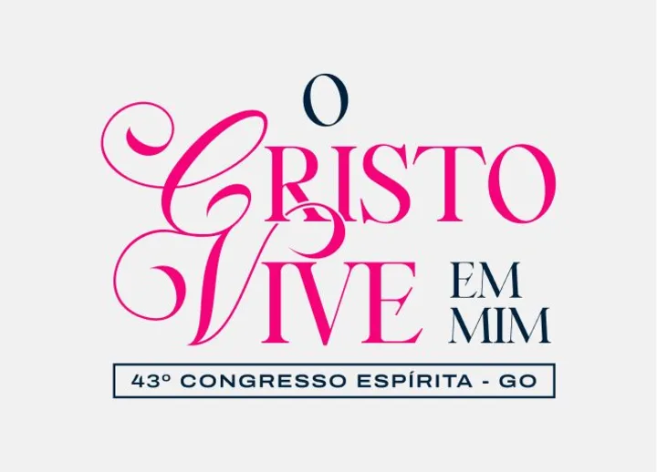
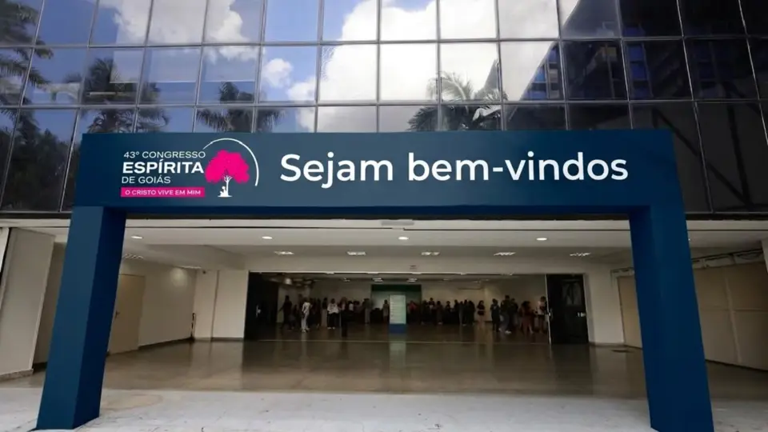

Programação
Em preparação.

FEEGO apresenta
O Cristo vive em mim
A Federação Espírita do Estado de Goiás prepara a próxima edição do Congresso Espírita de Goiás. As inscrições já estão disponíveis na plataforma oficial.
Tema
A 43ª edição convida ao recolhimento, à renovação interior e à vivência do Evangelho nas escolhas do cotidiano.

O Congresso
O Congresso Espírita de Goiás reúne participantes de diversas cidades em uma experiência de estudo, acolhimento, arte e fortalecimento do movimento espírita goiano.

Informações
Em preparação.
Em breve.
Inscrições abertas pela plataforma oficial do evento.
Acessar inscriçõesGoiânia/GO, detalhes a confirmar.
Contato
Para dúvidas sobre o Congresso, fale com a secretaria da FEEGO.